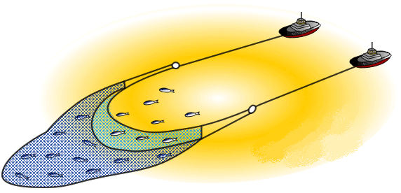

<!DOCTYPE HTML>
<html lang="" >
    <head>
        <meta charset="UTF-8">
        <meta content="text/html; charset=utf-8" http-equiv="Content-Type">
        <title>4.1. 用“拖网”来收集需求 · GitBook</title>
        <meta http-equiv="X-UA-Compatible" content="IE=edge" />
        <meta name="description" content="">
        <meta name="generator" content="GitBook 3.2.3">
        
        
        
    
    <link rel="stylesheet" href="../gitbook/style.css">

    
            
                
                <link rel="stylesheet" href="../gitbook/gitbook-plugin-anchors/plugin.css">
                
            
                
                <link rel="stylesheet" href="../gitbook/gitbook-plugin-highlight/website.css">
                
            
                
                <link rel="stylesheet" href="../gitbook/gitbook-plugin-search/search.css">
                
            
                
                <link rel="stylesheet" href="../gitbook/gitbook-plugin-fontsettings/website.css">
                
            
        

    

    
        
    
        
    
        
    
        
    
        
    
        
    

        
    
    
    
    <meta name="HandheldFriendly" content="true"/>
    <meta name="viewport" content="width=device-width, initial-scale=1, user-scalable=no">
    <meta name="apple-mobile-web-app-capable" content="yes">
    <meta name="apple-mobile-web-app-status-bar-style" content="black">
    <link rel="apple-touch-icon-precomposed" sizes="152x152" href="../gitbook/images/apple-touch-icon-precomposed-152.png">
    <link rel="shortcut icon" href="../gitbook/images/favicon.ico" type="image/x-icon">

    
    <link rel="next" href="4.2.html" />
    
    
    <link rel="prev" href="./" />
    

    <style>
    @media only screen and (max-width: 640px) {
        .book-header .hidden-mobile {
            display: none;
        }
    }
    </style>
    <script>
        window["gitbook-plugin-github-buttons"] = {"buttons":[{"user":"tonydeng","repo":"user-stories-applied","type":"star","size":"small","count":true},{"user":"tonydeng","type":"follow","size":"small","width":"170","count":true},{"user":"tonydeng","type":"watch","size":"small","count":true}]};
    </script>

    </head>
    <body>
        
<div class="book">
    <div class="book-summary">
        
            
<div id="book-search-input" role="search">
    <input type="text" placeholder="Type to search" />
</div>

            
                <nav role="navigation">
                


<ul class="summary">
    
    

    

    
        
        
    
        <li class="chapter " data-level="1.1" data-path="../">
            
                <a href="../">
            
                    
                    敏捷的用户故事方法
            
                </a>
            

            
        </li>
    
        <li class="chapter " data-level="1.2" data-path="../starting.html">
            
                <a href="../starting.html">
            
                    
                    一、起步
            
                </a>
            

            
            <ul class="articles">
                
    
        <li class="chapter " data-level="1.2.1" data-path="../ch1/">
            
                <a href="../ch1/">
            
                    
                    1. 背景
            
                </a>
            

            
            <ul class="articles">
                
    
        <li class="chapter " data-level="1.2.1.1" data-path="../ch1/1.1.html">
            
                <a href="../ch1/1.1.html">
            
                    
                    1.1. 什么是用户故事？
            
                </a>
            

            
        </li>
    
        <li class="chapter " data-level="1.2.1.2" data-path="../ch1/1.2.html">
            
                <a href="../ch1/1.2.html">
            
                    
                    1.2. 细节在哪里？
            
                </a>
            

            
        </li>
    
        <li class="chapter " data-level="1.2.1.3" data-path="../ch1/1.3.html">
            
                <a href="../ch1/1.3.html">
            
                    
                    1.3. “必须多长时间完成”
            
                </a>
            

            
        </li>
    
        <li class="chapter " data-level="1.2.1.4" data-path="../ch1/1.4.html">
            
                <a href="../ch1/1.4.html">
            
                    
                    1.4. 客户团队
            
                </a>
            

            
        </li>
    
        <li class="chapter " data-level="1.2.1.5" data-path="../ch1/1.5.html">
            
                <a href="../ch1/1.5.html">
            
                    
                    1.5. 使用故事的过程是怎么样的？
            
                </a>
            

            
        </li>
    
        <li class="chapter " data-level="1.2.1.6" data-path="../ch1/1.6.html">
            
                <a href="../ch1/1.6.html">
            
                    
                    1.6. 规划发布和迭代
            
                </a>
            

            
        </li>
    
        <li class="chapter " data-level="1.2.1.7" data-path="../ch1/1.7.html">
            
                <a href="../ch1/1.7.html">
            
                    
                    1.7. 什么是验收测试？
            
                </a>
            

            
        </li>
    
        <li class="chapter " data-level="1.2.1.8" data-path="../ch1/1.8.html">
            
                <a href="../ch1/1.8.html">
            
                    
                    1.8. 为什么要变成用户故事？
            
                </a>
            

            
        </li>
    
        <li class="chapter " data-level="1.2.1.9" data-path="../ch1/brief.html">
            
                <a href="../ch1/brief.html">
            
                    
                    1.9. 小结
            
                </a>
            

            
        </li>
    

            </ul>
            
        </li>
    
        <li class="chapter " data-level="1.2.2" data-path="../ch2/">
            
                <a href="../ch2/">
            
                    
                    2. 编写故事
            
                </a>
            

            
            <ul class="articles">
                
    
        <li class="chapter " data-level="1.2.2.1" data-path="../ch2/2.1.html">
            
                <a href="../ch2/2.1.html">
            
                    
                    2.1. 独立的
            
                </a>
            

            
        </li>
    
        <li class="chapter " data-level="1.2.2.2" data-path="../ch2/2.2.html">
            
                <a href="../ch2/2.2.html">
            
                    
                    2.2. 可讨论的
            
                </a>
            

            
        </li>
    
        <li class="chapter " data-level="1.2.2.3" data-path="../ch2/2.3.html">
            
                <a href="../ch2/2.3.html">
            
                    
                    2.3. 对用户或客户有价值的
            
                </a>
            

            
        </li>
    
        <li class="chapter " data-level="1.2.2.4" data-path="../ch2/2.4.html">
            
                <a href="../ch2/2.4.html">
            
                    
                    2.4. 可评估的
            
                </a>
            

            
        </li>
    
        <li class="chapter " data-level="1.2.2.5" data-path="../ch2/2.5.html">
            
                <a href="../ch2/2.5.html">
            
                    
                    2.5. 小的
            
                </a>
            

            
        </li>
    
        <li class="chapter " data-level="1.2.2.6" data-path="../ch2/2.6.html">
            
                <a href="../ch2/2.6.html">
            
                    
                    2.6. 可测试的
            
                </a>
            

            
        </li>
    
        <li class="chapter " data-level="1.2.2.7" data-path="../ch2/2.7.html">
            
                <a href="../ch2/2.7.html">
            
                    
                    2.7. 职责
            
                </a>
            

            
        </li>
    
        <li class="chapter " data-level="1.2.2.8" data-path="../ch2/brief.html">
            
                <a href="../ch2/brief.html">
            
                    
                    2.8. 小结
            
                </a>
            

            
        </li>
    

            </ul>
            
        </li>
    
        <li class="chapter " data-level="1.2.3" data-path="../ch3/">
            
                <a href="../ch3/">
            
                    
                    3. 用户角色建模
            
                </a>
            

            
            <ul class="articles">
                
    
        <li class="chapter " data-level="1.2.3.1" data-path="../ch3/3.1.html">
            
                <a href="../ch3/3.1.html">
            
                    
                    3.1. 用户角色
            
                </a>
            

            
        </li>
    
        <li class="chapter " data-level="1.2.3.2" data-path="../ch3/3.2.html">
            
                <a href="../ch3/3.2.html">
            
                    
                    3.2. 角色建模的步骤
            
                </a>
            

            
        </li>
    
        <li class="chapter " data-level="1.2.3.3" data-path="../ch3/3.3.html">
            
                <a href="../ch3/3.3.html">
            
                    
                    3.3. “虚构人物”和“极端人物”
            
                </a>
            

            
        </li>
    
        <li class="chapter " data-level="1.2.3.4" data-path="../ch3/3.4.html">
            
                <a href="../ch3/3.4.html">
            
                    
                    3.4. 如果有现场用户该如何？
            
                </a>
            

            
        </li>
    
        <li class="chapter " data-level="1.2.3.5" data-path="../ch3/3.5.html">
            
                <a href="../ch3/3.5.html">
            
                    
                    3.5. 职责
            
                </a>
            

            
        </li>
    
        <li class="chapter " data-level="1.2.3.6" data-path="../ch3/brief.html">
            
                <a href="../ch3/brief.html">
            
                    
                    3.6. 小结
            
                </a>
            

            
        </li>
    

            </ul>
            
        </li>
    
        <li class="chapter " data-level="1.2.4" data-path="./">
            
                <a href="./">
            
                    
                    4. 收集故事
            
                </a>
            

            
            <ul class="articles">
                
    
        <li class="chapter active" data-level="1.2.4.1" data-path="4.1.html">
            
                <a href="4.1.html">
            
                    
                    4.1. 用“拖网”来收集需求
            
                </a>
            

            
        </li>
    
        <li class="chapter " data-level="1.2.4.2" data-path="4.2.html">
            
                <a href="4.2.html">
            
                    
                    4.2. 够用就行，不是吗
            
                </a>
            

            
        </li>
    
        <li class="chapter " data-level="1.2.4.3" data-path="4.3.html">
            
                <a href="4.3.html">
            
                    
                    4.3. 方法
            
                </a>
            

            
            <ul class="articles">
                
    
        <li class="chapter " data-level="1.2.4.3.1" data-path="4.3.1.html">
            
                <a href="4.3.1.html">
            
                    
                    4.3.1. 用户访谈
            
                </a>
            

            
        </li>
    
        <li class="chapter " data-level="1.2.4.3.2" data-path="4.3.2.html">
            
                <a href="4.3.2.html">
            
                    
                    4.3.2. 问卷调查
            
                </a>
            

            
        </li>
    
        <li class="chapter " data-level="1.2.4.3.3" data-path="4.3.3.html">
            
                <a href="4.3.3.html">
            
                    
                    4.3.3. 观察
            
                </a>
            

            
        </li>
    
        <li class="chapter " data-level="1.2.4.3.4" data-path="4.3.4.html">
            
                <a href="4.3.4.html">
            
                    
                    4.3.4. 故事编写工作坊
            
                </a>
            

            
        </li>
    

            </ul>
            
        </li>
    
        <li class="chapter " data-level="1.2.4.4" data-path="4.4.html">
            
                <a href="4.4.html">
            
                    
                    4.4. 职责
            
                </a>
            

            
        </li>
    
        <li class="chapter " data-level="1.2.4.5" data-path="brief.html">
            
                <a href="brief.html">
            
                    
                    4.5. 小结
            
                </a>
            

            
        </li>
    

            </ul>
            
        </li>
    
        <li class="chapter " data-level="1.2.5" data-path="../ch5/">
            
                <a href="../ch5/">
            
                    
                    5. 与用户代理合作
            
                </a>
            

            
            <ul class="articles">
                
    
        <li class="chapter " data-level="1.2.5.1" data-path="../ch5/5.1.html">
            
                <a href="../ch5/5.1.html">
            
                    
                    5.1 用户的经理
            
                </a>
            

            
        </li>
    
        <li class="chapter " data-level="1.2.5.2" data-path="../ch5/5.2.html">
            
                <a href="../ch5/5.2.html">
            
                    
                    5.2 开发经理
            
                </a>
            

            
        </li>
    
        <li class="chapter " data-level="1.2.5.3" data-path="../ch5/5.3.html">
            
                <a href="../ch5/5.3.html">
            
                    
                    5.3 销售人员
            
                </a>
            

            
        </li>
    
        <li class="chapter " data-level="1.2.5.4" data-path="../ch5/5.4.html">
            
                <a href="../ch5/5.4.html">
            
                    
                    5.4 领域专家
            
                </a>
            

            
        </li>
    
        <li class="chapter " data-level="1.2.5.5" data-path="../ch5/5.5.html">
            
                <a href="../ch5/5.5.html">
            
                    
                    5.5 市场营销团队
            
                </a>
            

            
        </li>
    
        <li class="chapter " data-level="1.2.5.6" data-path="../ch5/5.6.html">
            
                <a href="../ch5/5.6.html">
            
                    
                    5.6 以前的用户
            
                </a>
            

            
        </li>
    
        <li class="chapter " data-level="1.2.5.7" data-path="../ch5/5.7.html">
            
                <a href="../ch5/5.7.html">
            
                    
                    5.7 客户
            
                </a>
            

            
        </li>
    
        <li class="chapter " data-level="1.2.5.8" data-path="../ch5/5.8.html">
            
                <a href="../ch5/5.8.html">
            
                    
                    5.8 培训师和技术支持
            
                </a>
            

            
        </li>
    
        <li class="chapter " data-level="1.2.5.9" data-path="../ch5/5.9.html">
            
                <a href="../ch5/5.9.html">
            
                    
                    5.9 业务分析师或系统分析师
            
                </a>
            

            
        </li>
    
        <li class="chapter " data-level="1.2.5.10" data-path="../ch5/5.10.html">
            
                <a href="../ch5/5.10.html">
            
                    
                    5.10 与用户代理合作时，做些什么？
            
                </a>
            

            
        </li>
    
        <li class="chapter " data-level="1.2.5.11" data-path="../ch5/5.11.html">
            
                <a href="../ch5/5.11.html">
            
                    
                    5.11 可以自己来吗？
            
                </a>
            

            
        </li>
    
        <li class="chapter " data-level="1.2.5.12" data-path="../ch5/5.12.html">
            
                <a href="../ch5/5.12.html">
            
                    
                    5.12 建立客户团队
            
                </a>
            

            
        </li>
    
        <li class="chapter " data-level="1.2.5.13" data-path="../ch5/5.13.html">
            
                <a href="../ch5/5.13.html">
            
                    
                    5.13 职责
            
                </a>
            

            
        </li>
    
        <li class="chapter " data-level="1.2.5.14" data-path="../ch5/brief.html">
            
                <a href="../ch5/brief.html">
            
                    
                    5.14 小结
            
                </a>
            

            
        </li>
    

            </ul>
            
        </li>
    
        <li class="chapter " data-level="1.2.6" data-path="../ch6/">
            
                <a href="../ch6/">
            
                    
                    6. 用户故事验收测试
            
                </a>
            

            
            <ul class="articles">
                
    
        <li class="chapter " data-level="1.2.6.1" data-path="../ch6/6.1.html">
            
                <a href="../ch6/6.1.html">
            
                    
                    6.1. 在写代码之前写测试
            
                </a>
            

            
        </li>
    
        <li class="chapter " data-level="1.2.6.2" data-path="../ch6/6.2.html">
            
                <a href="../ch6/6.2.html">
            
                    
                    6.2. 客户定义测试
            
                </a>
            

            
        </li>
    
        <li class="chapter " data-level="1.2.6.3" data-path="../ch6/6.3.html">
            
                <a href="../ch6/6.3.html">
            
                    
                    6.3. 测试是过程的一部分
            
                </a>
            

            
        </li>
    
        <li class="chapter " data-level="1.2.6.4" data-path="../ch6/6.4.html">
            
                <a href="../ch6/6.4.html">
            
                    
                    6.4. 多少测试才算多？
            
                </a>
            

            
        </li>
    
        <li class="chapter " data-level="1.2.6.5" data-path="../ch6/6.5.html">
            
                <a href="../ch6/6.5.html">
            
                    
                    6.5. 验收测试
            
                </a>
            

            
        </li>
    
        <li class="chapter " data-level="1.2.6.6" data-path="../ch6/6.6.html">
            
                <a href="../ch6/6.6.html">
            
                    
                    6.6. 测试类型
            
                </a>
            

            
        </li>
    
        <li class="chapter " data-level="1.2.6.7" data-path="../ch6/6.7.html">
            
                <a href="../ch6/6.7.html">
            
                    
                    6.7. 职责
            
                </a>
            

            
        </li>
    
        <li class="chapter " data-level="1.2.6.8" data-path="../ch6/brief.html">
            
                <a href="../ch6/brief.html">
            
                    
                    6.8. 小结
            
                </a>
            

            
        </li>
    

            </ul>
            
        </li>
    
        <li class="chapter " data-level="1.2.7" data-path="../ch7/">
            
                <a href="../ch7/">
            
                    
                    7. 优秀的用户故事准则
            
                </a>
            

            
            <ul class="articles">
                
    
        <li class="chapter " data-level="1.2.7.1" data-path="../ch7/7.1.html">
            
                <a href="../ch7/7.1.html">
            
                    
                    7.1. 从目标故事开始
            
                </a>
            

            
        </li>
    
        <li class="chapter " data-level="1.2.7.2" data-path="../ch7/7.2.html">
            
                <a href="../ch7/7.2.html">
            
                    
                    7.2. 切蛋糕
            
                </a>
            

            
        </li>
    
        <li class="chapter " data-level="1.2.7.3" data-path="../ch7/7.3.html">
            
                <a href="../ch7/7.3.html">
            
                    
                    7.3. 编写封闭的故事
            
                </a>
            

            
        </li>
    
        <li class="chapter " data-level="1.2.7.4" data-path="../ch7/7.4.html">
            
                <a href="../ch7/7.4.html">
            
                    
                    7.4. 卡片约束
            
                </a>
            

            
        </li>
    
        <li class="chapter " data-level="1.2.7.5" data-path="../ch7/7.5.md">
            
                <span>
            
                    
                    7.5. 根据实现时间来确定故事规模
            
                </a>
            

            
        </li>
    
        <li class="chapter " data-level="1.2.7.6" data-path="../ch7/7.6.md">
            
                <span>
            
                    
                    7.6. 有些需求并不是故事
            
                </a>
            

            
        </li>
    
        <li class="chapter " data-level="1.2.7.7" data-path="../ch7/7.7.md">
            
                <span>
            
                    
                    7.7. 在故事里包含故事角色
            
                </a>
            

            
        </li>
    
        <li class="chapter " data-level="1.2.7.8" data-path="../ch7/7.8.md">
            
                <span>
            
                    
                    7.8. 只为一个用户编写
            
                </a>
            

            
        </li>
    
        <li class="chapter " data-level="1.2.7.9" data-path="../ch7/7.9.md">
            
                <span>
            
                    
                    7.9. 以主动语态编写
            
                </a>
            

            
        </li>
    
        <li class="chapter " data-level="1.2.7.10" data-path="../ch7/7.10.md">
            
                <span>
            
                    
                    7.10. 有客户编写
            
                </a>
            

            
        </li>
    
        <li class="chapter " data-level="1.2.7.11" data-path="../ch7/7.11.md">
            
                <span>
            
                    
                    7.11. 不要忘记意图
            
                </a>
            

            
        </li>
    
        <li class="chapter " data-level="1.2.7.12" data-path="../ch7/brief.md">
            
                <span>
            
                    
                    7.12. 小结
            
                </a>
            

            
        </li>
    

            </ul>
            
        </li>
    

            </ul>
            
        </li>
    

    

    <li class="divider"></li>

    <li>
        <a href="https://www.gitbook.com" target="blank" class="gitbook-link">
            Published with GitBook
        </a>
    </li>
</ul>


                </nav>
            
        
    </div>

    <div class="book-body">
        
            <div class="body-inner">
                
                    

<div class="book-header" role="navigation">
    

    <!-- Title -->
    <h1>
        <i class="fa fa-circle-o-notch fa-spin"></i>
        <a href=".." >4.1. 用“拖网”来收集需求</a>
    </h1>
</div>


                    <div class="page-wrapper" tabindex="-1" role="main">
                        <div class="page-inner">
                            
<div id="book-search-results">
    <div class="search-noresults">
    
                                <section class="normal markdown-section">
                                
                                <h1 id="41-&#x7528;&#x62D6;&#x7F51;&#x6765;&#x6536;&#x96C6;&#x9700;&#x6C42;"><a name="41-&#x7528;&#x62D6;&#x7F51;&#x6765;&#x6536;&#x96C6;&#x9700;&#x6C42;" class="plugin-anchor" href="#41-&#x7528;&#x62D6;&#x7F51;&#x6765;&#x6536;&#x96C6;&#x9700;&#x6C42;"><i class="fa fa-link" aria-hidden="true"></i></a>4.1. &#x7528;&#x201C;&#x62D6;&#x7F51;&#x201D;&#x6765;&#x6536;&#x96C6;&#x9700;&#x6C42;</h1>
<p>&#x4E00;&#x4E9B;&#x9700;&#x6C42;&#x76F8;&#x5173;&#x7684;&#x4E66;&#x4E2D;&#x7528;&#x5230;&#x4E86;&#x50CF;&#x201C;&#x5F15;&#x51FA;&#x201D;(<code>Kovitz 1999</code>; <code>Lauesen 2002</code>; <code>Wiegers 1999</code>)&#x548C;&#x201C;&#x6355;&#x6349;&#x201D;(<code>Jacobson</code>, <code>Booch</code>&#x548C;<code>Rumbaugh 1999</code>)&#x8FD9;&#x6837;&#x7684;&#x8BCD;&#x6765;&#x63CF;&#x8FF0;&#x8BC6;&#x522B;&#x4E0E;&#x786E;&#x8BA4;&#x9700;&#x6C42;&#x7684;&#x5B9E;&#x8DF5;&#x3002;</p>
<p>&#x4E0D;&#x8FC7;&#x8FD9;&#x6837;&#x7684;&#x672F;&#x8BED;&#x7ED9;&#x6211;&#x4EEC;&#x4E00;&#x79CD;<strong>&#x9519;&#x89C9;</strong>&#xFF1A;&#x201C;&#x9700;&#x6C42;&#x672C;&#x6765;&#x5DF2;&#x7ECF;&#x5B58;&#x5728;&#x4E86;&#xFF0C;&#x6211;&#x4EEC;&#x53EA;&#x8981;&#x8BA9;&#x5BA2;&#x6237;&#x7ED9;&#x6211;&#x4EEC;&#x89E3;&#x91CA;&#x9700;&#x6C42;&#xFF0C;&#x7136;&#x540E;&#x628A;&#x5B83;&#x4EEC;&#x9501;&#x5230;&#x4E00;&#x4E2A;&#x7B3C;&#x5B50;&#x91CC;&#x5C31;&#x53EF;&#x4EE5;&#x4E86;&#x3002;&#x201D;&#x5F88;&#x591A;&#x9700;&#x6C42;&#x5E76;&#x4E0D;&#x5BB9;&#x6613;&#x60F3;&#x5230;&#x3002;&#x540C;&#x6837;&#xFF0C;<strong>&#x7528;&#x6237;&#x5E76;&#x4E0D;&#x77E5;&#x9053;&#x6240;&#x6709;&#x9700;&#x6C42;</strong>&#xFF0C;&#x6240;&#x4EE5;&#x4E0D;&#x80FD;&#x5355;&#x7EAF;&#x4F9D;&#x9760;&#x5F15;&#x51FA;(<code>elicitaion</code>)&#x3002;</p>
<p>&#x6211;&#x4EEC;&#x53EF;&#x4EE5;&#x7528;&#x53E6;&#x5916;&#x4E00;&#x4E2A;&#x8BCD;--<strong>&#x62D6;&#x7F51;</strong>(<code>trawling</code>)&#x8FD9;&#x4E2A;&#x8BCD;&#x6765;&#x63CF;&#x8FF0;&#x6536;&#x96C6;&#x9700;&#x6C42;&#x7684;&#x8FC7;&#x7A0B;&#x3002;&#x600E;&#x4E48;&#x7406;&#x89E3;&#x5462;&#xFF1F;<strong>&#x8981;&#x50CF;&#x201C;&#x62D6;&#x7F51;&#x6E14;&#x8239;&#x6355;&#x635E;&#x9C7C;&#x201D;&#x90A3;&#x6837;&#x6536;&#x96C6;&#x9700;&#x6C42;</strong>&#x3002;</p>
<p></p>
<p>&#x4E3A;&#x4EC0;&#x4E48;&#x8981;&#x7528;&#x8FD9;&#x6837;&#x7684;&#x6BD4;&#x55BB;&#x5462;&#xFF1F;&#x7406;&#x7531;&#x5982;&#x4E0B;&#xFF1A;</p>
<ul>
<li><p>&#x9996;&#x5148;&#xFF0C;<strong>&#x4E0D;&#x540C;&#x5927;&#x5C0F;&#x7684;&#x7F51;&#x7528;&#x6765;&#x6355;&#x83B7;&#x4E0D;&#x540C;&#x5927;&#x5C0F;&#x7684;&#x9700;&#x6C42;</strong>&#x3002;&#x7B2C;&#x4E00;&#x904D;&#xFF0C;&#x6211;&#x4EEC;&#x53EF;&#x4EE5;&#x7528;&#x5927;&#x7F51;&#x773C;&#x7684;&#x6E14;&#x7F51;&#x635E;&#x4E00;&#x904D;&#x9700;&#x6C42;&#x6C60;&#xFF0C;&#x4EE5;&#x6B64;&#x5F97;&#x5230;&#x6240;&#x6709;&#x7684;&#x5927;&#x9700;&#x6C42;&#x3002;&#x901A;&#x8FC7;&#x5927;&#x9700;&#x6C42;&#xFF0C;&#x5F62;&#x6210;&#x5BF9;&#x4EA7;&#x54C1;&#x7684;&#x6574;&#x4F53;&#x611F;&#x89C9;&#x3002;&#x63A5;&#x4E0B;&#x6765;&#xFF0C;&#x7528;&#x7F51;&#x773C;&#x5C0F;&#x4E00;&#x4E9B;&#x7684;&#x6E14;&#x7F51;&#x5F97;&#x5230;&#x4E2D;&#x7B49;&#x5927;&#x5C0F;&#x7684;&#x9700;&#x6C42;&#xFF0C;&#x5C55;&#x793A;&#x8FD8;&#x4E0D;&#x7528;&#x987E;&#x53CA;&#x5230;&#x90A3;&#x4E9B;&#x5C0F;&#x9700;&#x6C42;&#x3002;&#x5728;&#x8FD9;&#x4E2A;&#x6BD4;&#x55BB;&#x4E2D;&#xFF0C;<strong>&#x5927;&#x5C0F;&#x53EF;&#x4EE5;&#x662F;&#x5BF9;&#x6B64;&#x4EA7;&#x54C1;&#x7684;&#x5546;&#x4E1A;&#x4EF7;&#x503C;&#x9AD8;&#x4F4E;&#x6216;&#x5FC5;&#x8981;&#x6027;&#x7A0B;&#x5EA6;</strong>&#x7B49;&#x3002;</p>
</li>
<li><p>&#x5176;&#x6B21;&#xFF0C;&#x62D6;&#x7F51;&#x8868;&#x8FBE;&#x4E86;&#x53E6;&#x4E00;&#x4E2A;&#x542B;&#x4E49;:<strong>&#x9700;&#x6C42;&#x4F1A;&#x50CF;&#x1F41F;&#x4E00;&#x6837;&#xFF0C;&#x4F1A;&#x751F;&#x957F;&#xFF0C;&#x4E5F;&#x53EF;&#x80FD;&#x4F1A;&#x6B7B;&#x4EA1;</strong>&#x3002;&#x4ECA;&#x5929;&#x6E14;&#x7F51;&#x53EF;&#x80FD;&#x4F1A;&#x6F0F;&#x6389;&#x4E00;&#x4E2A;&#x9700;&#x6C42;&#xFF0C;&#x56E0;&#x4E3A;&#x8FD9;&#x4E2A;&#x9700;&#x6C42;&#x5BF9;&#x4E8E;&#x7CFB;&#x7EDF;&#x6765;&#x8BF4;&#x4E0D;&#x91CD;&#x8981;&#x3002;&#x4F46;&#x662F;&#xFF0C;&#x6839;&#x636E;&#x6BCF;&#x8F6E;&#x8FED;&#x4EE3;&#x7684;&#x53CD;&#x9988;&#xFF0C;&#x7CFB;&#x7EDF;&#x4F1A;&#x671D;&#x7740;&#x4E8B;&#x5148;&#x4E0D;&#x53EF;&#x9884;&#x77E5;&#x7684;&#x65B9;&#x5411;&#x53D1;&#x5C55;&#xFF0C;&#x6709;&#x4E9B;&#x9700;&#x6C42;&#x4F1A;&#x53D8;&#x5F97;&#x8D8A;&#x6765;&#x8D8A;&#x91CD;&#x8981;&#x3002;&#x540C;&#x6837;&#xFF0C;&#x6709;&#x4E9B;&#x66FE;&#x7ECF;&#x88AB;&#x8BA4;&#x4E3A;&#x91CD;&#x8981;&#x7684;&#x9700;&#x6C42;&#xFF0C;&#x91CD;&#x8981;&#x6027;&#x53EF;&#x80FD;&#x4F1A;&#x964D;&#x4F4E;&#xFF0C;&#x6709;&#x65F6;&#x751A;&#x81F3;&#x964D;&#x4F4E;&#x5230;&#x6211;&#x4EEC;&#x8BA4;&#x4E3A;&#x8FD9;&#x4E9B;&#x9700;&#x6C42;&#x5DF2;&#x7ECF;&#x65E0;&#x6548;&#x4E86;&#x3002;</p>
</li>
<li><p>&#x7B2C;&#x4E09;&#xFF0C;&#x6B63;&#x5982;&#x5728;<strong>&#x67D0;&#x4E9B;&#x533A;&#x57DF;&#x62D6;&#x7F51;&#x6355;&#x9C7C;&#x4E0D;&#x53EF;&#x80FD;&#x6355;&#x5230;&#x6240;&#x6709;&#x7684;&#x1F41F;&#xFF0C;&#x6211;&#x4EEC;&#x4E5F;&#x4E0D;&#x53EF;&#x80FD;&#x6355;&#x6349;&#x5230;&#x6240;&#x6709;&#x7684;&#x9700;&#x6C42;</strong>&#x3002;&#x53E6;&#x5916;&#xFF0C;&#x5728;&#x62D6;&#x7F51;&#x6355;&#x635E;&#x9700;&#x6C42;&#x7684;&#x65F6;&#x5019;&#xFF0C;&#x4E5F;&#x53EF;&#x80FD;&#x635E;&#x5230;&#x4E00;&#x4E9B;&#x5E9F;&#x5F03;&#x7684;&#x8D27;&#x7269;&#x6216;&#x6F02;&#x6D6E;&#x7684;&#x6B8B;&#x9AB8;&#xFF0C;&#x4ED6;&#x4EEC;&#x4F7F;&#x9700;&#x6C42;&#x81A8;&#x80C0;&#x3002;</p>
</li>
<li><p>&#x6700;&#x540E;&#xFF0C;&#x8FD9;&#x4E2A;&#x62D6;&#x7F51;&#x6355;&#x635E;&#x9700;&#x6C42;&#x7684;&#x6BD4;&#x55BB;&#x8FD8;&#x8BF4;&#x660E;&#x4E86;&#x4E00;&#x4E2A;&#x91CD;&#x8981;&#x7684;&#x73B0;&#x5B9E;&#xFF1A;<strong>&#x6280;&#x80FD;&#x4E5F;&#x662F;&#x53D1;&#x73B0;&#x9700;&#x6C42;&#x7684;&#x4E00;&#x4E2A;&#x8981;&#x7D20;</strong>&#x3002;&#x4E00;&#x4E2A;&#x719F;&#x7EC3;&#x7684;&#x9700;&#x6C42;&#x5206;&#x6790;&#x4EBA;&#x5458;&#xFF08;<code>requirements trawler</code>&#xFF09;&#x77E5;&#x9053;&#x8981;&#x5230;&#x54EA;&#x91CC;&#x53BB;&#x627E;&#x9700;&#x6C42;&#xFF0C;&#x800C;&#x4E0D;&#x719F;&#x7EC3;&#x7684;&#x9700;&#x6C42;&#x5206;&#x6790;&#x4EBA;&#x5458;&#x53EA;&#x4F1A;&#x7528;&#x4F4E;&#x6548;&#x7684;&#x65B9;&#x6CD5;&#x6216;&#x5728;&#x9519;&#x8BEF;&#x7684;&#x5730;&#x65B9;&#x6D6A;&#x8D39;&#x65F6;&#x95F4;&#x3002;</p>
</li>
</ul>
<p>&#x90A3;&#x6211;&#x4EEC;&#x63A5;&#x4E0B;&#x6765;&#x770B;&#x770B;&#x6709;&#x54EA;&#x4E9B;&#x66F4;&#x6709;&#x6548;&#x201C;&#x635E;&#x201D;&#x5230;&#x7528;&#x6237;&#x6545;&#x4E8B;&#x7684;&#x65B9;&#x6CD5;&#x3002;</p>

                                
                                </section>
                            
    </div>
    <div class="search-results">
        <div class="has-results">
            
            <h1 class="search-results-title"><span class='search-results-count'></span> results matching "<span class='search-query'></span>"</h1>
            <ul class="search-results-list"></ul>
            
        </div>
        <div class="no-results">
            
            <h1 class="search-results-title">No results matching "<span class='search-query'></span>"</h1>
            
        </div>
    </div>
</div>

                        </div>
                    </div>
                
            </div>

            
                
                <a href="./" class="navigation navigation-prev " aria-label="Previous page: 4. 收集故事">
                    <i class="fa fa-angle-left"></i>
                </a>
                
                
                <a href="4.2.html" class="navigation navigation-next " aria-label="Next page: 4.2. 够用就行，不是吗">
                    <i class="fa fa-angle-right"></i>
                </a>
                
            
        
    </div>

    <script>
        var gitbook = gitbook || [];
        gitbook.push(function() {
            gitbook.page.hasChanged({"page":{"title":"4.1. 用“拖网”来收集需求","level":"1.2.4.1","depth":3,"next":{"title":"4.2. 够用就行，不是吗","level":"1.2.4.2","depth":3,"path":"ch4/4.2.md","ref":"ch4/4.2.md","articles":[]},"previous":{"title":"4. 收集故事","level":"1.2.4","depth":2,"path":"ch4/README.md","ref":"ch4/README.md","articles":[{"title":"4.1. 用“拖网”来收集需求","level":"1.2.4.1","depth":3,"path":"ch4/4.1.md","ref":"ch4/4.1.md","articles":[]},{"title":"4.2. 够用就行，不是吗","level":"1.2.4.2","depth":3,"path":"ch4/4.2.md","ref":"ch4/4.2.md","articles":[]},{"title":"4.3. 方法","level":"1.2.4.3","depth":3,"path":"ch4/4.3.md","ref":"ch4/4.3.md","articles":[{"title":"4.3.1. 用户访谈","level":"1.2.4.3.1","depth":4,"path":"ch4/4.3.1.md","ref":"ch4/4.3.1.md","articles":[]},{"title":"4.3.2. 问卷调查","level":"1.2.4.3.2","depth":4,"path":"ch4/4.3.2.md","ref":"ch4/4.3.2.md","articles":[]},{"title":"4.3.3. 观察","level":"1.2.4.3.3","depth":4,"path":"ch4/4.3.3.md","ref":"ch4/4.3.3.md","articles":[]},{"title":"4.3.4. 故事编写工作坊","level":"1.2.4.3.4","depth":4,"path":"ch4/4.3.4.md","ref":"ch4/4.3.4.md","articles":[]}]},{"title":"4.4. 职责","level":"1.2.4.4","depth":3,"path":"ch4/4.4.md","ref":"ch4/4.4.md","articles":[]},{"title":"4.5. 小结","level":"1.2.4.5","depth":3,"path":"ch4/brief.md","ref":"ch4/brief.md","articles":[]}]},"dir":"ltr"},"config":{"gitbook":"*","theme":"default","variables":{},"plugins":["anchors","ga","github-buttons"],"pluginsConfig":{"search":{},"lunr":{"maxIndexSize":1000000,"ignoreSpecialCharacters":false},"fontsettings":{"theme":"white","family":"sans","size":2},"highlight":{},"github-buttons":{"buttons":[{"user":"tonydeng","repo":"user-stories-applied","type":"star","size":"small","count":true},{"user":"tonydeng","type":"follow","size":"small","width":"170","count":true},{"user":"tonydeng","type":"watch","size":"small","count":true}]},"ga":{"configuration":"auto","token":"UA-80673215-1"},"sharing":{"facebook":true,"twitter":true,"google":false,"weibo":false,"instapaper":false,"vk":false,"all":["facebook","google","twitter","weibo","instapaper"]},"theme-default":{"styles":{"website":"styles/website.css","pdf":"styles/pdf.css","epub":"styles/epub.css","mobi":"styles/mobi.css","ebook":"styles/ebook.css","print":"styles/print.css"},"showLevel":false},"anchors":{}},"structure":{"langs":"LANGS.md","readme":"README.md","glossary":"GLOSSARY.md","summary":"SUMMARY.md"},"pdf":{"pageNumbers":true,"fontSize":12,"fontFamily":"Arial","paperSize":"a4","chapterMark":"pagebreak","pageBreaksBefore":"/","margin":{"right":62,"left":62,"top":56,"bottom":56}},"styles":{"website":"styles/website.css","pdf":"styles/pdf.css","epub":"styles/epub.css","mobi":"styles/mobi.css","ebook":"styles/ebook.css","print":"styles/print.css"}},"file":{"path":"ch4/4.1.md","mtime":"2019-02-28T04:47:42.279Z","type":"markdown"},"gitbook":{"version":"3.2.3","time":"2019-02-28T04:48:47.010Z"},"basePath":"..","book":{"language":""}});
        });
    </script>
</div>

        
    <script src="../gitbook/gitbook.js"></script>
    <script src="../gitbook/theme.js"></script>
    
        
        <script src="../gitbook/gitbook-plugin-ga/plugin.js"></script>
        
    
        
        <script src="../gitbook/gitbook-plugin-github-buttons/plugin.js"></script>
        
    
        
        <script src="../gitbook/gitbook-plugin-search/search-engine.js"></script>
        
    
        
        <script src="../gitbook/gitbook-plugin-search/search.js"></script>
        
    
        
        <script src="../gitbook/gitbook-plugin-lunr/lunr.min.js"></script>
        
    
        
        <script src="../gitbook/gitbook-plugin-lunr/search-lunr.js"></script>
        
    
        
        <script src="../gitbook/gitbook-plugin-sharing/buttons.js"></script>
        
    
        
        <script src="../gitbook/gitbook-plugin-fontsettings/fontsettings.js"></script>
        
    

    </body>
</html>

